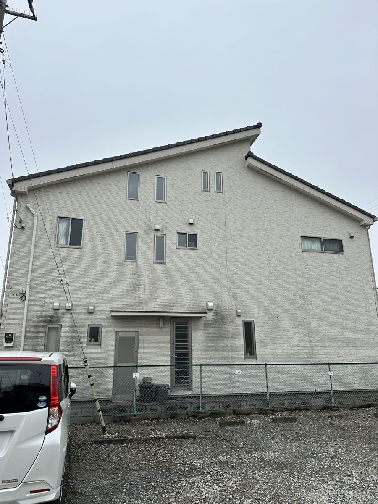
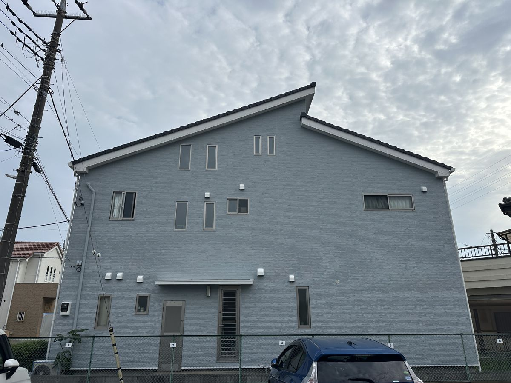
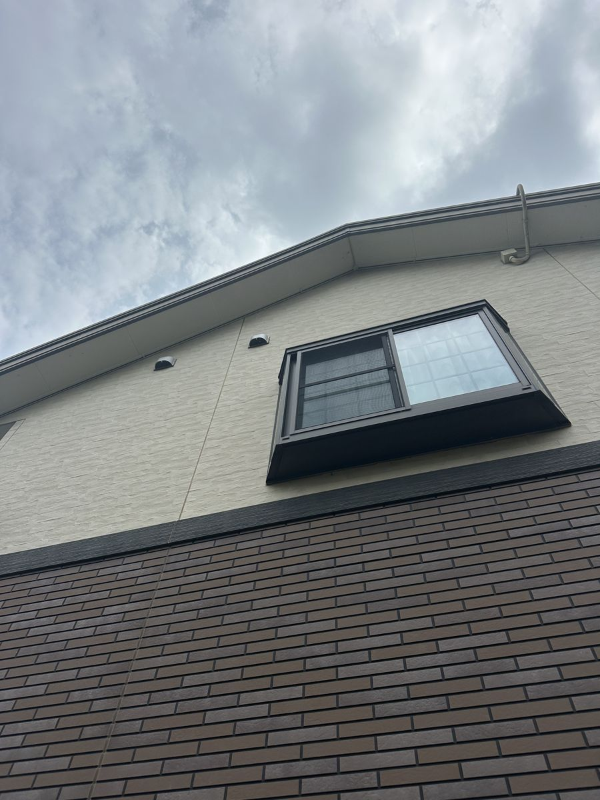
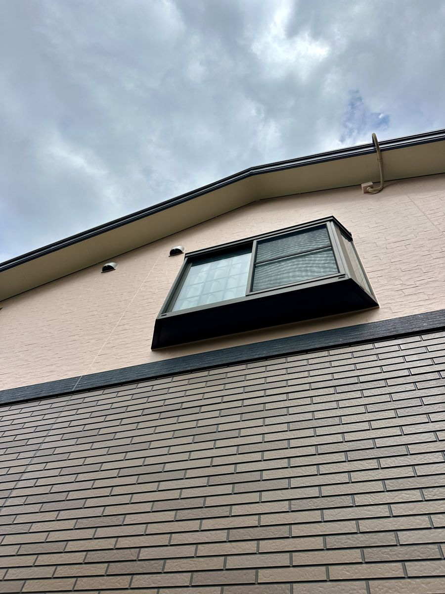

桶川市の外壁塗装・屋根塗装
Real Make（リアルメイク）は桶川市上日出谷南の塗装店です。坂田・鴨川・川田谷など、市内で施工してきた実績をもとに、桶川市の住まいに合わせたご提案をします。
GOOGLE クチコミ★ 5.0 13件
事業所桶川市内（上日出谷南）
保証外壁 5年 屋根3年・付帯2年
Real Make（リアルメイク）は桶川市上日出谷南の塗装店です。坂田・鴨川・川田谷など、市内で施工してきた実績をもとに、桶川市の住まいに合わせたご提案をします。
2026年7月時点
桶川市内で施工させていただいた3件です。3件とも仕上げ方が違います。ご自宅に近いケースをご覧ください。


「真っ黒な家にしたい」というご要望からのスタートでした。黒は艶を出すとムラや汚れが目立つため、艶を落とした仕上がりをご提案。雨樋や軒天まで黒で統一し、白いサッシだけを残しています。お隣との間がほとんどない立地でしたが、外壁・屋根・付帯部・ベランダ防水まで20日で完了しました。
「真っ黒な家にしたくて相談しました。艶を落とせばカッコよく仕上がると教えてもらってお願いしました。イメージ通りにしてもらえてよかったです。」桶川市坂田 K様


北面の換気フード下に黒い雨だれが出ていたお宅です。屋根は和瓦のため塗装せず、外壁と付帯部のみを施工しました。色は納得いくまで打ち合わせを重ね、本体をライトブルーグレー、バルコニーと玄関まわりをホワイトに塗り分けています。前に出ている部分を明るくすると、建物に立体感が出ます。
「見積もりから金額の変更なし／色のイメージを納得いくまで打ち合わせ／途中経過を写真有りでこまめに連絡くれる」桶川市鴨川 F様（お客様の声より抜粋）


上壁はチョーキング、下壁のレンガ調は色あせが進んでいました。上壁だけを塗り替え、下壁はクリヤー（透明）塗装で柄を残したまま色と艶を戻しています。写真の上半分と下半分を見比べてください。下は柄がそのまま、色だけが深く戻っています。
「相談したときに親身に話を聞いてくれたこと、工事中もこまめに報告をくれたことで、安心してお任せできました。」桶川市川田谷 K様（お客様の声より抜粋）
公開している3件は、地区も仕上げ方も違います。ただ、共通点がありました。3件とも窯業系サイディングで、築12年から16年。そして3件とも、傷みの入口は目地のコーキングか、日の当たらない面の汚れでした。
桶川市は内陸なので、海沿いのような塩害はありません。そのかわり夏の高温と冬の乾いた風を受けます。この環境で先に音を上げるのは、塗膜そのものより目地のコーキングです。硬くなってひび割れ、そこから水が入ります。塗り替えを考えるときは、外壁の色あせだけでなく、サッシまわりや外壁のつなぎ目も見てみてください。
もうひとつ。3件のうち2件は和瓦だったため、屋根は塗っていません。桶川市には瓦屋根のお宅がよくあります。「外壁と一緒に屋根も」が、どのお宅でも正解とは限りません。屋根材を見て判断します。
塗り替えを考えはじめる目安は築10年からです。ただし築10年でも、まだ状態が良いお宅もあります。当社はまだ早いと判断した場合、そうお伝えします。診断は無料です。まずは今の状態を知るところから、お気軽にご利用ください。
事業所は桶川市上日出谷南。代表の大川は桶川市で生まれ育ち、今も桶川市で暮らしています。ご相談をいただければすぐお伺いできますし、工事が終わったあとも連絡が取れる場所にいます。外壁の塗り替えは、何度も経験する工事ではありません。だからこそ、終わったあとに相談できる相手が近くにいることは、思っている以上に大事だと考えています。
地元のべに花まつりへの協賛など、桶川市の行事にも微力ながら協力させていただいています。
周辺エリア：北本市・上尾市・鴻巣市・伊奈町
| 屋号 | Real Make（リアルメイク） |
|---|---|
| 代表者 | 大川 亮太 |
| 所在地 | 埼玉県桶川市上日出谷南2-1-19 |
| 電話 | 090-1434-0189 |
| 営業時間 | 8:00 〜 18:00 |
| 創業 | 2010年 |
| 保証 | 外壁 5年 ／ 屋根 3年 ／ 付帯部 2年 |
塗り替えが必要かどうかから、正直にお答えします。今はまだ早い、と判断した場合はそうお伝えします。写真を送っていただくだけの相談でも大丈夫です。
現地調査・お見積り無料／しつこい営業はしません